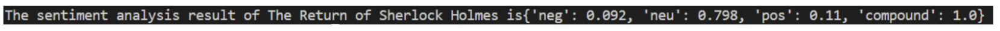

In this project, I used the data source from the book library- Project Gutenberg. Specifically, I chose two books by Arthur Conan Doyle- The Adventures of Sherlock Holmes and The Returns of Sherlock Holmes. The main objective of the project is to analyze the writing styles of Arthur Conan Doyle, similarity and differences. To achieve the objective, I first did some basic analysis to the text, including getting the total words, most common words, and compare the results from both books. And then, I conducted an Natural Language Processing and Text Similarity Test to further achieving the objective. I hope the result shows the fact that whether the two books are strongly similar since both of them are from the same author and has the same main character-Sherlock Holmes. I also want to have some insights regarding the writing styles of Aurthur Conan Doyle, in terms of tones and commonly used words.
To start the project, I decided to use two books from the Project Gutenberg then I process the file to make sure the actual content of the book is used for later analyze by excluding headers,limiting spaces, changing words to lower cases.. I started doing the basic analysis by getting the total words from both books to have a general sense of both books and to ensure that I am not comparing an extremely long book with a short book. Then, I did some analysis on the most common words from each book and compare their similarity and differences. Furthermore, after having a general sense of both books, I did natural language processing to have some insights on the writing styles of Arthur Conan Doyle, positive, negative or neutral? Followed by this, I decided to do a text similarity test instead of further the sentiment analysis because I believe comparing two books is the top priority of the project, plus the previous analysis on the most common words in each book gave interesting overlapping words. And thus, a text similarity test was used to generate more insight on the main objective.
Before analyzing the two books, I first ensure these two books are great options for comparison and analyzing the writing styles by checking the numbers of words in each book. The result shows that The Adventures of Sherlock Holmes has 107591 words, and The Return of Sherlock Holmes has 113642 words. Since they have similar numbers of words, further analysis are completed as following
The first objective of the project is to find the writing style of Arthur Conan Doyle by doing a sentiment analysis. Based on the result of the sentiment analysis, Overall, both books have very similar sentiments. But there are slightly differences- The Return of Sherlock Holmes can be perceived as having more sentimental words than The Adventures of Sherlock Holmes because the former has higher results in both negative and positive words than the later. I believe this is an interesting result because Arthur Conan Doyle was 'forced' by his audience to write The Return of Sherlock Holmes after he decided to end the series by 'killing' Sherlock Holmes, which may create a deeper bond between him and Sherlock Holmes and evoking both positive and negative sentiment while writing, instead of writing the book on an completely objective way.
The second objective of the project is to find the similarity and differences between two books. Based on the result of analyzing top 10 common words in both books. There are eight words are the overlapping words in the top 10 common words in two books. They are ['said', 'holmes', 'man', 'mr', 'now', 'see', 'well', 'us'] The result surprised me because I did not expect that there are eight overlapping words. The result also surprised me that the word 'watson' only appeared 210 times in The Return of Sherlock Holmes and is not even the top 10 most common words in The Adventures of Sherlock Holmes . Also the frequency of the word 'holmes' doubled in the The Return of Sherlock Holmes. I assume the huge discrepancy is due to the fact that audiences hope to see more interactions between Sherlock Holmes and John Watson. But more research is required to make the assumption, such as fully investigate the opinions of audiences at that time and analyzing other books from Aurthur, which is not within the scope of this project. But I hope this research is a solid and helpful foundation for more in depth research on Arthur Conan Doyle and his books. Since two books have the same eight overlapping words in top ten most common words, I decided to further analyze the similarity of two books using the fuzz ratio. However, the result shows that there is only 1% similarity between two books.
The following images show major outputs mentioned aboved. More result can be seen by uncommenting lines in the code.py file.
Overall, I believe the project went well. The project is appropriately scoped, since I am able to generate interesting results for both of my objectives and create a project that is meaningful for further study on Arthur Conan Doyle and his books by providing a clear direction. I also had a good plan for testing by consistently print results to check if they are my desired results.I learned alot from this project by utilizing what I learned in classes and implemented them into actual projects. I also love learning new techniques, such as the Natural Language Processing and the fuzz ratio. Going forward, I would love to use these new techniques in the future projects. I also learned a lot on the importance of writing out the framework and structure before starting to write the actual code. However, I understand that there is always room for improvement. I was struggling on importing the natural language processing package because my python version is not the most up to date one and after I downloaded the the most recent version, I still struggled a little bit. And thus, for my next project, I will prevent similar situations happen again by checking everything before I started the project to avoid inefficiency.